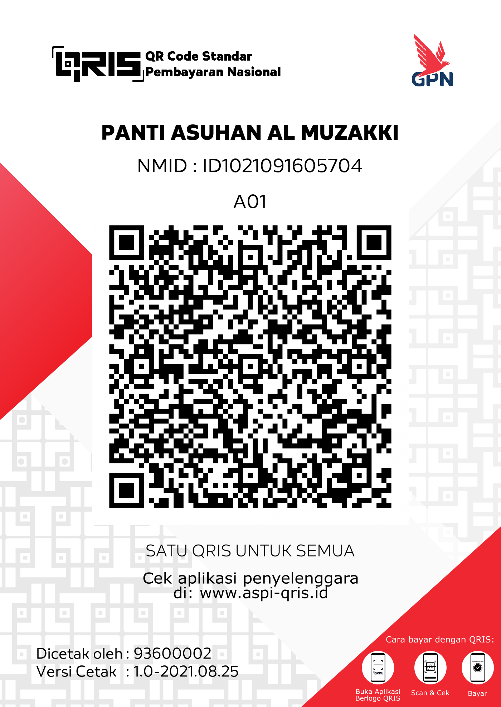

Untuk melakukan donasi via transfer bank, kami menyediakan beberapa pilihan bank yaitu sebagai berikut :

135.001.009.5899
a/n Yayasan Yatim Piatu Al Muzakki
Salin No Rekening
750.201.002.345.530
a/n Panti Asuhan Al Muzakki
Salin No Rekening
014.636.7893
a/n Yayasan Yatim Piatu Al Muzakki
Salin No Rekening
24.717.006.16
a/n Yayasan Yatim Piatu Al Muzakki
Salin No Rekening
309.306.5891
a/n Panti Asuhan Al Muzakki
Salin No Rekening
Untuk donasi menggunakan QRIS, bisa scan QR Kode di bawah dengan menggunakan aplikasi OVO, DANA, LinkAja, GoPay, ShopeePay atau aplikasi lainya yang mendukung pembayaran QRIS :

Dan bagi bapak/ibu yang sudah mengirimkan donasi, mohon kesediaannya untuk melakukan konfirmasi transfer dengan cara klik tombol “Konfirmasi Transfer” berikut ini.
Konfirmasi Transfer
Untuk memberikan donasi dengan cara menyerahkan langsung baik berupa uang atau pun barang, Anda bisa langsung datang ke Yayasan Al Muzakki di alamat :
Jl. Raya Benteng Potugis, RT 08 RW 05, Desa Banyumanis Kecamatan Donorojo, Kabupaten Jepara, Jawa Tengah 59454
Nomer Telpon (SMS/WA) : 082243570529 (Bpk. Amin) / 083843277444 (Bpk. Toto)
Lihat di Google Maps
Bagi calon donatur yang berada di kota Jepara dan sekitarnya, kami siap untuk mengambil ke tempat atau lokasi yang sekiranya masih bisa kami jangkau. Mohon bisa menginformasikan kepada kami alamat dan nomer telpon bapak/ibu calon donatur ke alamat email kami :
atau bisa juga dengan menghubungi kontak dari Yayasan yaitu sebagai berikut

Jl. Raya Benteng Portugis RT 08 RW 05 Desa Banyumanis, Donorojo,Jepara, Jawa Tengah 59454
Lihat Peta